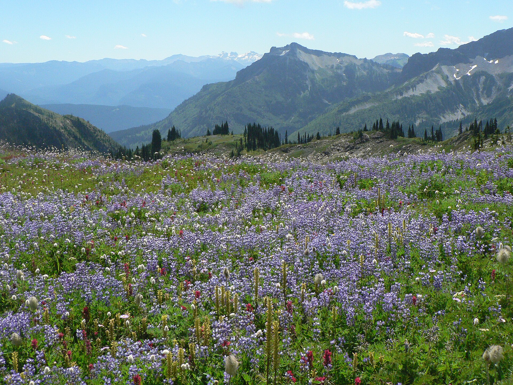

Home

Photo by: National Park Service
Welcome! Maybe you’re interested in foraging in Washington State. Maybe you’ve looked at a plant recently and thought “Hey! Can I eat that?”. In which case this is the website for you. This website will provide information about the edible flowers that are native to Washington State. You can find information about each flower, recipes and ways to prepare the plants/flowers, you can even add your own recipes if you like, you can find tips and safety information, and you can find additional resources all on this website.